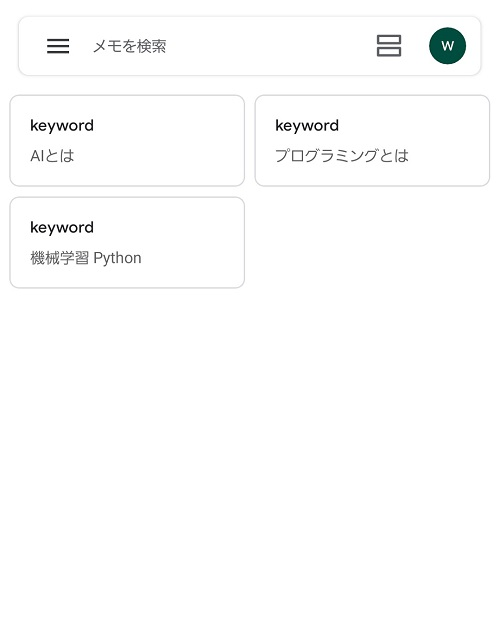

理工系大学を卒業し、電子工学、医用工学や制御工学など幅広く履修しました。ITパスポートも取得しました。
大学での就職活動時病気になり、長らく既卒として就職活動や個人での学習や開発等を行っておりました。
その後現在の会社に入社し、主にプログラマーとして幅広く多岐にわたる業務に従事しています。
プログラミング等の学習にはProgateやCODEPREP、paiza、ほかUdemyでの動画学習や書籍を活用しています。
スキル項目
- 目次
- 業務経験
- 会社業務でのスキルについて
- 過去の個人業務や開発
- デザインや画像編集
- Javascript
- PHP
- Python
- ライティング業務やAWS
- 今後どうなっていきたいか
＜会社業務でのスキルについて＞
社内webシステムの運用、改修（Django、ASP.NET)
Accessを利用した自社製品の改修やデータ調整
上記製品のメールでの問い合わせ対応
Accessを利用した自社製品のWeb版の新規開発（デザインからサーバーサイド、フロントエンド全てに携わっています。）
具体的な言語や扱っているソフトとしては
Access、SSMSとストアドプロシージャでのデータ管理、ASP.NET、Python、HTML、CSS、JavaScript（jQuery含む）
Accessを利用した自社製品の改修やデータ調整
上記製品のメールでの問い合わせ対応
Accessを利用した自社製品のWeb版の新規開発（デザインからサーバーサイド、フロントエンド全てに携わっています。）
具体的な言語や扱っているソフトとしては
Access、SSMSとストアドプロシージャでのデータ管理、ASP.NET、Python、HTML、CSS、JavaScript（jQuery含む）
＜デザインやイラスト＞
GIMPやInkscapeなどを用いてデザイン等の制作もできます。
普段はブログで使用する写真のレタッチや画像の合成をしています。
また、最近はデザイン分野への関心からFigmaを活用してWebデザインやUIトレースをし学習を進めています。
制作例を→ リンク に記載していますのでよかったらご参照ください。
普段はブログで使用する写真のレタッチや画像の合成をしています。
また、最近はデザイン分野への関心からFigmaを活用してWebデザインやUIトレースをし学習を進めています。
制作例を→ リンク に記載していますのでよかったらご参照ください。
＜JavaScript＞
基礎的なJavaScriptを使用した3分間タイマーです。3分経過するとアラートが表示されます。
Timer
0 分 0 秒
＜PHP＞
PHP言語を使い基本的なオブジェクト指向を身に着けるためカフェのメニュー一覧、詳細ページ、注文金額の計算などが表示できるWebサイトを作りました。
開発環境にはAtomを使い、ローカルサーバ表示のためにXAMPPを用いています。（サイトに使用している写真は各々フリー写真です）
ローカル環境で表示した際の動画を下記に示しています。（サイトの公開に利用しているGithubではmp4非対応であるためgif画像として掲載しています）
開発環境にはAtomを使い、ローカルサーバ表示のためにXAMPPを用いています。（サイトに使用している写真は各々フリー写真です）
ローカル環境で表示した際の動画を下記に示しています。（サイトの公開に利用しているGithubではmp4非対応であるためgif画像として掲載しています）

＜Python＞
Webスクレイピングを用いたデータの収集によりデータをもとにした予測、マーケティングを可能としたり、
よく読むページの情報を一括でまとめたりするためPythonを学び始めました。
よく読むページの情報を一括でまとめたりするためPythonを学び始めました。
・メモの検索自動化
夜中に気になったことなどその場で調べない時、スマートフォンのメモアプリ(Google Keep)に留めておくのですが、
後日調べ忘れたり、メモが多くなったりということがあるため
PCからメモにアクセス、読み取りをし、自動で複数ウインドウを立ち上げ検索までするアプリを作りました。

後日調べ忘れたり、メモが多くなったりということがあるため
PCからメモにアクセス、読み取りをし、自動で複数ウインドウを立ち上げ検索までするアプリを作りました。
スマートフォン側のメモ画面
上記がスマートフォンにメモした内容です。今回検索したのは「AIとは」「プログラミングとは」「機械学習 Python」です。
PCでプログラムを実行すると下記のようにウインドウを立ち上げGoogleで検索を行います。
PCでプログラムを実行すると下記のようにウインドウを立ち上げGoogleで検索を行います。

プログラムの実行画面
今後の改善点として、スクレイピングなどと組み合わせ、検索結果を読み取ってデータを加工したり、立ち上げ時のウインドウ位置などの調整もしたいです
なおあまりにも大量の同時アクセスはサイトへの攻撃にみなされる可能性があるため注意していきます。
また、利用規約等にも注意します。(今回はGoogleKeep用API、ChromeDriverの活用、検索間隔を取ることに気を付けました)
なおあまりにも大量の同時アクセスはサイトへの攻撃にみなされる可能性があるため注意していきます。
また、利用規約等にも注意します。(今回はGoogleKeep用API、ChromeDriverの活用、検索間隔を取ることに気を付けました)
・データ分析分野
１．回帰分析による気温予測
２．回帰分析による株価の高値、安値予測
＜ライティング業務やクラウドインフラ(AWS)＞
Wordpressでのブログ、SNSの運営、Webに関する学習を進めるにつれ、Webマーケティングをはじめデータサイエンス分野へも興味を抱き、
まずは効果測定に広く使われているアナリティクスの知識をつけるためGoogleアナリティクス個人認定資格を取得しました。
Googleアナリティクスやサーチコンソール、キーワードリサーチを用いて手探りながらも実践を続けていきたいです。
ブログへ掲載する写真や画像の合成やレタッチにはPhotoshopを使用しています。
また、現在クラウドソーシングでのライティング業務やサイト制作を日常的に請け負っております。
ライティング業務については主にWebメディアの記事をSEO対策も加味して執筆しております。
内容はガジェットや家電系が多く、1記事あたり3000字～4000字ほど、2，3週間に5記事作成といったペースです。
サーバー、クラウドの勉強も兼ね、レンタルサーバーからAWSへのWordpressを移行しました。
AWSについてUdemy(https://www.udemy.com/courses/search/?src=ukw&q=aws) を活用して実際に構築しながら学んでいます。
構成はクラウドインフラの基礎学習も意図しているため、
基本的な構成(LinuxサーバーEC2、複数データベース、ロードバランサーによるセッションの分散等)をマルチAZ)で行いました
まずは効果測定に広く使われているアナリティクスの知識をつけるためGoogleアナリティクス個人認定資格を取得しました。
Googleアナリティクスやサーチコンソール、キーワードリサーチを用いて手探りながらも実践を続けていきたいです。
ブログへ掲載する写真や画像の合成やレタッチにはPhotoshopを使用しています。
また、現在クラウドソーシングでのライティング業務やサイト制作を日常的に請け負っております。
ライティング業務については主にWebメディアの記事をSEO対策も加味して執筆しております。
内容はガジェットや家電系が多く、1記事あたり3000字～4000字ほど、2，3週間に5記事作成といったペースです。
サーバー、クラウドの勉強も兼ね、レンタルサーバーからAWSへのWordpressを移行しました。
AWSについてUdemy(https://www.udemy.com/courses/search/?src=ukw&q=aws) を活用して実際に構築しながら学んでいます。
構成はクラウドインフラの基礎学習も意図しているため、
基本的な構成(LinuxサーバーEC2、複数データベース、ロードバランサーによるセッションの分散等)をマルチAZ)で行いました
＜今後どうなっていきたいか＞
現在の会社での業務経験から社内SEまたは
Web分野へ専門性を持って取り組みたく、Webの新規開発経験を通してデザインやフロントエンド、
ライター経験などからマーケティングなどWebサイトのコンテンツに関わることへも強い興味を抱いています
Web分野へ専門性を持って取り組みたく、Webの新規開発経験を通してデザインやフロントエンド、
ライター経験などからマーケティングなどWebサイトのコンテンツに関わることへも強い興味を抱いています